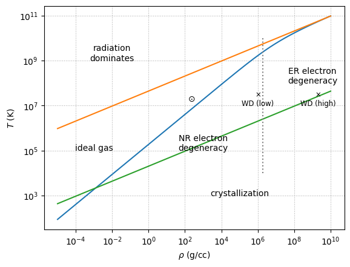

EOS regimes#
Recall, we’ll consider:
ions (assume full ionization)
electrons
radiation
We can look at the \(\rho\)-\(T\) plane to understand where each of the components of the EOS dominate.
import numpy as np
import matplotlib.pyplot as plt
Physical constants, all in CGS
m_e = 9.11e-28
m_u = 1.66e-24
c = 3.e10
k = 1.38e-16
h = 6.63e-27
a = 5.67e-15
e = 4.8e-10 # esu
Some composition info. We’ll specify
mean molecular weight per electron:
\[\mu_e = \left [ \sum_k \frac{Z_k X_k}{A_k} \right ]^{-1}\]we often work with electron fraction, \(Y_e = 1/\mu_e\)
mean molecular weight of the ions:
\[\mu_I = \left [ \sum_k \frac{X_k}{A_k} \right ]^{-1}\]total mean molecular weight:
\[\frac{1}{\mu} = \frac{1}{\mu_e} + \frac{1}{\mu_I}\]
mu_e = 2
mu_I = 12.0
mu = 1.0 / (1.0/mu_e + 1.0/mu_I)
# for crystallization, we need the charge of the ions
Z = 6.0
Degeneracy vs. Ideal gas#
We find the (dimensionless) Fermi momentum (\(x_F = p_F / (mc)\)) via
where we assume complete degeneracy (so the distribution function is just a step-function). This gives
where the constant \(B\) is:
We then define the transition to degeracy by comparing to the thermal energy, \(k T\)
Here’s a function that computes this line
# Fermi momentum constant (from number density integral)
B = (8.0*np.pi/3.0)*m_u*(m_e*c/h)**3
def deg_ideal(rho, mu_e=2.0):
"""temperature on the line separating degeneracy and ideal gas as a function
of rho"""
# dimensionless Fermi momentum
x_F = (rho / mu_e / B)**(1./3.)
# set E_F = k T
T = (1./k) * m_e * c**2 * (np.sqrt(1 + x_F**2) - 1)
return T
Ideal gas vs. radiation#
A simple way to determine whether an ideal case or radiation dominates is to set their energy densities equal. At the temperatures where we expect this to occur, we will assume that the electrons are not degenerate, so we will use the full \(\mu\) for the composition in the ideal gas instead of \(\mu_I\).
Our line is:
Here’s a function that computes this
def rad_ideal(rho, mu=0.5):
"""temperature on the line separating radiation and ideal gas as a function
of rho"""
T = ((3 * k / (m_u * a)) * (rho / mu))**(1./3.)
return T
Crystallization#
Finally, at low temperatures and high densities, the ions can crystallize. The comparison where is the thermal energy to the Coulomb energy:
where we take \(\Gamma = 175\) as the point where crystallization sets in (see Equation of state of fully ionized electron-ion plasmas. II. Extension to relativistic densities and to the solid phase by Potekhin & Chabrier 2002).
The separation between ions, \(a\) is found via:
Putting this together, the expression for the boundary of crystallization is computed below
def crystallization(rho):
"""temperature where crystallization of ions sets in"""
Gamma_C = 175
T = ((rho / mu_I) * (Z**2 * e**2 / (Gamma_C * k))**3 * (4.0 * np.pi / 3.0 /
m_u))**(1./3.)
return T
Plotting the boundaries#
rho = np.logspace(-5, 10, 2000)
fig = plt.figure()
ax = fig.add_subplot(111)
ax.plot(rho, deg_ideal(rho))
ax.plot(rho, rad_ideal(rho))
ax.plot(rho, crystallization(rho))
# NR vs ER degeneracy
ax.vlines(B*mu_e, 1.e4, 1.e10, color="0.5", ls=":")
ax.text(1.e-2, 1.e9, "radiation\ndominates", horizontalalignment="center")
ax.text(1.e-3, 1.e5, "ideal gas", horizontalalignment="center")
ax.text(1.e3, 1.e5, "NR electron\ndegeneracy", horizontalalignment="center")
ax.text(1.e9, 1.e8, "ER electron\ndegeneracy", horizontalalignment="center")
ax.text(1.e5, 1.e3, "crystallization", horizontalalignment="center")
ax.text(150, 1.5e7, "⊙")
ax.text(1.e6, 1.e7, r"$\times$"+"\nWD (low)", horizontalalignment="center", fontsize="small")
ax.text(2.e9, 1.e7, r"$\times$"+"\nWD (high)", horizontalalignment="center", fontsize="small")
ax.set_xscale("log")
ax.set_yscale("log")
ax.set_xlabel(r"$\rho$ (g/cc)")
ax.set_ylabel("$T$ (K)")
ax.grid(ls=":")

Some representative WD positions are marked here—those are the conditions we might expect to encounter in the core of our WD in these labs.
Our EOS#
We’ll use the helmeos for these labs (see The Accuracy, Consistency, and Speed of an Electron-Positron Equation of State Based on Table Interpolation of the Helmholtz Free Energy by Timmes & Swesty 2000). This tabulates the electron thermodynamics in terms of \(\rho Y_e, T\),
and then adds the ion, radiation, and a simple expression for the Coulomb interactions.
If crystallization becomes important, we would be better served with using the skye EOS. However that
will run the labs a lot slower.